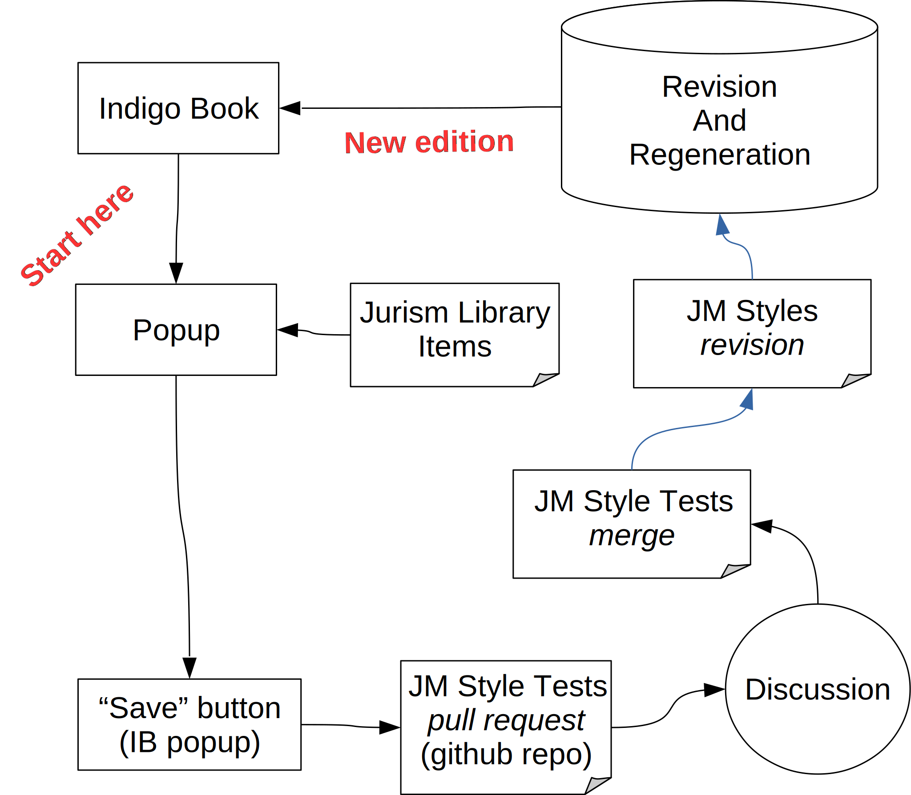

Indigo Book + Jurism: Integration
Indigo Book + Jurism: Integration
This post is a lightly edited version of a session proposal initially submitted to this year’s “CALIcon 2020,” the conference of the Center for Computer-Assisted Legal Instruction. When the current emergency intervened, the theme of the conference was reset to Law School in the Time of Pandemic, for which the staid theme of office automation was a less than perfect fit.
As the season for release of a fresh edition of The Bluebook draws near, thoughts will again turn to the burden of referencing US legal resources, and pens to the ritual of bemoaning the growing bulk and complexity of the country’s leading citation manual. This post concerns an effort to break this unfortunate cycle in the rhetorical weather system by deploying a new approach to the management of the nation’s citation rules.
The effort involves the integration of two community initiatives. The Indigo Book is an open-access guide to legal citation. Jurism is a variant of the open-source Zotero reference manager, extended to handle legal materials. The two projects share a relation to The Bluebook: A Uniform System of Citation. Indigo Book is a public-domain statement of the Bluebook rules, distributed free to the Internet. Jurism is an open-source reference manager with the capacity to generate accurate citations for multiple jurisdictions. The premise of both is that citation rules can and should be made more accessible and easier to follow.
While The Bluebook has been the target of considerable criticism over the years for its complexity, and for zealous protection of its commercial interest in a public standard. prominent challengers—most notably the ALWD Citation Manual, and Chicago’s Maroonbook—have (like the Indigo Book) opted in the end to closely follow The Bluebook’s rules. As Christine Hurt observed in 2002, this is the expected outcome of network effects. Simply stated, standardizing citation rules makes sense, the market abhors divergence, and all other things being equal, this offers an advantage to the first mover.[1]
Yet the complaints from authors bound by Bluebook rules persist, on two fronts: the complexity of the rules themselves; and the need to trawl through an ever-expanding volume of text to master each iteration of the style guide.[2]
These two issues are separable. The complexity of the style reflects that of the underlying material, and that is a product of the US federal system itself, beyond editorial control. The burden of trawling through text in search of guidance, however, is another matter, and connects directly to the topic of this post.
Technology has an answer to complex citation requirements. The basic idea, implemented in the venerable PASCAL language circa 1985,[3] and on a venerable PDP-11 in 1990,[4] is to store item details in a database of some sort (a “library”), and to use those details to generate citations automatically. This is “reference management,” and tools for this purpose have been in common use in most fields of research for decades. Using a reference manager, an author writes their article, sets the style, and outputs their manuscript. That’s it. In a well-supported field, the detailed arcana of citation guidelines are of interest primarily to copy editors, obsessive citation geeks, and people who maintain reference management software.
Despite the reference-intensive nature of our discipline,[5] lawyers have not yet experienced this generational wave in research support tools, largely because legal resources have a different kind of complexity. Research in other fields draws heavily on a limited number of resource types (books, articles, etc.), which have uniform metadata (title, volume, journal, etc.) that is expressed in a bewildering variety of citation styles.[6] In contrast, legal researchers are blessed with a single dominant style, but that style addresses an uneven eld of resources, some subject to sporadic revision (statutes and regulations), and many bound by idiosyncratic citation conventions (such as vendor-neutral cases, bills, resolutions, codified versus uncodified legislation, and vendor-bound legislative services).[7] These are very different challenges, and tools developed for other communities are not immediately adaptable to the needs of the law. In the words of the lead developer of Zotero:
There’s a huge amount of necessary complexity in the … legal functionality, and developing it requires a high level of specialized knowledge that we (and most developers we would want to hire) simply don’t have.[8]
The point being that, as Zotero is a tool for general use, a merger of Jurism functionality into Zotero is out of scope for their own project. In sum, bringing reference management to the law is a task for the legal community to spearhead—and today we can get there in a few short steps.[9]
As the Indigo Book and Jurism exemplify, open resources can be built: the more serious challenge is in their maintenance. This is where a union of the two projects comes into its own.
Updating a citation system with the size and complexity of the Indigo Book or The Bluebook faces a problem of scalability. The volume of interrelated detail is considerable, and no editor can have close familiarity with developments in every corner of the US national system at all levels. To keep costs manageable, any such project is reliant to some degree on crowd-sourcing. In the case of The Bluebook, this entails offering prizes for participation in an online survey in the lead-up to a new edition.[10] This works, but it is rather cumbersome, largely opaque, and operates only at five-year intervals.
There is a better approach to be had, both for editors charged with coordinating maintenance of this daunting style, and for the authors that it serves. Improving on the status quo turns on applying more modern tools to the task.
The work described below and illustrated in Appendix: Editorial Workflow has been done. As of this writing, its components can be trialed in the Jurism project copy of the Indigo Book and the beta version of the Jurism client.)
Indigo Book text The Indigo Book is licensed CC0, which allows us to make changes to the text for development purposes. The Jurism project copy has been modified in its HTML code to enable the dynamic features described below.
Jurism Library The Indigo Book contains a large number of
citation examples (approximately 800 of them). The details of each
resource represented in the examples (title, journal name, volume,
etc.) is entered into a Jurism library. The library is then synced to
the zotero.org cloud storage service and made available as a
public library.
By itself, this bundle of items is of limited value to users,
but its preparation serves the next element of the design, which is …
Popup guidance Citation examples in the Jurism copy of the Indigo Book are each linked to a popup that illustrates how items should be entered in Jurism to produce the linked citation form. Without such immediately accessible guidance, citing a novel source would involve first trawling through the Indigo Book or The Bluebook to determine the correct citation form, and then struggling with Jurism to achieve the correct output (tricky, since the Bluebook rules specify several dozen citation forms for judgments alone).
Test fixtures Each citation example in the Indigo Book is mirrored by an automated test fixture that uses the input from the Jurism library mentioned above to generate the exact output shown in the example. The test fixtures are stored in GitHub, a version control service designed for collaborative editing that is in wide use for software development. A test runner can be used to verify, in few seconds, that Jurism produces correct citations for each example in the Indigo Book.
Popup editing Users who take issue with an example or who wish to see additional materials covered can open the example or a proposal form for editing, after logging in (with a GitHub ID and password). The reporting user can amend the example or enter a new one, and provide an explanation of their change.
Discussion When a user edit is saved, it is filed as a GitHub “pull request” against the Jurism repository of style tests. This is a proposal for amendment. Participating editors receive email notification with a link to a GitHub discussion board where the pros and cons of the amendment can be aired.[11]
Pull request merger Amendments that are approved by the editors are “merged” into the test suite. There is no immediate change to the content of the Indigo Book text, but the discrepancy between the current and the expected output will be flagged when the automated tests are run by the Jurism support team.
Citation stylesheet revision The automated tests provide quality control in the preparation of the next version of the automated Indigo Book style, to assure that changes to not have unexpected side effects, and that they are consistently applied across all examples.
Regeneration of Indigo Book text To prepare a fresh edition of the Indigo Book, the revised stylesheet is used to generate the text of each example, folding it automatically into the text. The accuracy and consistency of the examples in the guide is assured, and does not require the independent line-by-line proofing of current editorial workflows.
Release of new edition After the editors sign off on revisions to the proper text of the Indigo Book*, the new edition is clear for release.
This post has focused on the specifics of the editorial workflow necessary for efficient maintenance of a complex citation style. There is more to be said, both about technical details and about broader implications. Scribbling on those topics will await a future occasion, but some of the latter might be:
-
Authors benefit from the accumulation of purpose-built personal or institutional collections that are independent of a monolithic service provider.
-
Authors (and editors) benefit from automated citation in document preparation.
-
Automation of accurate legal citation opens a path to popularizing the practice among non-lawyers, including journalists, promoting broader understanding of and engagement with governing institutions.
-
The example of structured legal metadata embodied in Jurism may stimulate legal aggregators to serve such data with their content, further facilitating the sharing of legal information and the interoperation of systems.
Appendix: Editorial Workflow

Christine Hurt, Network Effects and Legal Citation: How Antitrust Theory Predicts Who Will Build a Better Bluebook Mousetrap in the Age of Electronic Mice, 87 Iowa L. Rev. 1257 (2002). ↩︎
Compare Columbia Law Review Ass’n et al., The Bluebook: A Uniform System of Citation (19th ed. 2010) (weighing in at 511 pages) with Columbia Law Review Ass’n et al., The Bluebook: A Uniform System of Citation (20th ed. 2015) (extending to 560 pages). ↩︎
See BibTeX, Wikipedia (2019), https://en.wikipedia.org/w/index.php?title= BibTeX&oldid=926358916.f; see also Leslie Lamport, LaTeX: A Document Preparation System (1986); Oren Patashnik, BibTeXing (Feb. 8, 1988), http://mirrors.ctan.org/ biblio/bibtex/base/btxdoc.pdf; Oren Patashnik, Designing BibTeX Styles (Feb. 8, 1988), http://mirrors.ctan.org/biblio/bibtex/contrib/doc/btxhak.pdf . ↩︎
Oral History of Ernest Beutler, Legends in Hematology (American Society of Hematology Nov. 6, 1990), https://www.hematology.org/About/History/Legends/1616.aspx . ↩︎
See Fred R. Shapiro, Origins of Bibliometrics, Citation Indexing, and Citation Analysis: The Neglected Legal Literature, 43 J. Am. Soc. Info. Sci. 337 (1992). ↩︎
A leading repository contains over 2,000 unique stylesheets. Official repository for Citation Style Language (CSL) citation styles (Feb. 22, 2020), https://github.com/ citation-style-language/styles. ↩︎
For a cram course on the some of the complexities involved, see Thomas Bruce, Making Metasausage, (Cornell Legal Information Instittue, May 7, 2012–Aug. 25, 2014), https://blog.law.cornell.edu/metasausage/. ↩︎
Comment by Dan Stillman (dstillman), Zotero Forums, (July 19, 2018), https://forums.zotero.org/discussion/comment/313006#Comment_313006 ↩︎
By extending Zotero’s legal item types, adding a full set of identi ers for US courts and jurisdictions, and implementing per-jurisdiction citation stylesheets. ↩︎
In 2013, survey takers were offered the exciting possibility of winning a Kindle Paperwhite e-reader or a free paper copy of the 20th edition and a two-year subscription to the Bluebook Online website. See Emily Lawson, The Bluebook needs you!, UHLC Nota Bene (Oct. 16, 2013), https://notabeneuh.blogspot.com/2013/10/the-bluebook-needs-you.html. ↩︎
Bluebook editors would of course be welcome to join this circle if they desire. ↩︎